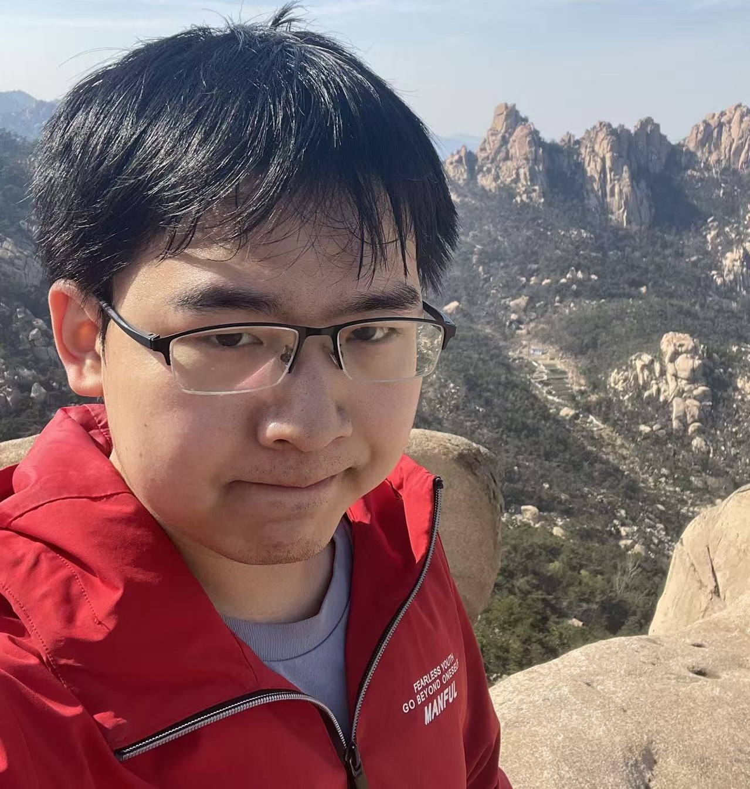

Welcome! I am Zezhong Ding (Zeddy), a Ph.D. candidate in the Data Darkness Lab at the University of Science and Technology of China (USTC), advised by Prof. Xike Xie. I also collaborate closely with Prof. S. Kevin Zhou. I was a visiting student at Hong Kong Baptist University, working with Prof. Jianliang Xu.
My research lies at the intersection of data management, computer systems, and machine learning. I focus on algorithm–system co-design for scalable learning and reasoning over structured data. My work spans graph partitioning algorithms and resource-efficient systems for large-scale graph training.
Building on this work, I am exploring graph-native reasoning and world modeling, relational learning over databases, and foundation models for structured data. Across these directions, I aim to improve model capability and computational efficiency through the joint design of algorithms and systems.
My research has appeared in SIGMOD, SC, NeurIPS, ICML, KDD, ACL, and IEEE TC. My work on dynamic graph learning was recognized as an SC 2026 Best Student Paper Finalist.
News
- 2026/9/29We introduce a new paradigm for world modeling. Read our paper to learn more!
- 2026/7/22Our SC26 paper, DOLPHIN, has been nominated for the Best Student Paper Award!
- 2026/7/2One paper is accepted by SC 2026 (Chicago, USA)! This is my first time publishing a paper in a systems conference.
- 2026/5/16One paper is accepted by KDD 2026 (Jeju, South Korea)!
- 2026/5/1One paper is accepted by ICML 2026 (Seoul, South Korea)!
- 2026/4/7One paper is accepted by the Findings of ACL 2026.
- 2025/11/24One paper is accepted by KDD 2026 (Jeju, South Korea)!
- 2025/9/18One paper is accepted by NeurIPS 2025 (San Diego Convention Center & Mexico City)!
- 2025/6/26I give an oral presentation at SIGMOD 2025 in Berlin, Germany!
- 2025/5/23One paper is accepted by SIGMOD 2026 (Bengaluru, India)!
- 2025/5/16One paper is accepted by ACL Main Conference 2025 (Vienna, Austria)!
- 2025/2/10I have completed my three-month visit at HKBU DB Group! Best wishes for the HKBU DB Group!
- 2024/11/1One paper is accepted by SIGMOD 2025! Next station is Berlin, Germany!
- 2024/9/30One paper is accepted by IEEE Transactions on Computers (My first journal paper)!
- 2024/6/13I give my first conference talk on SIGMOD 2024 in Santiago, Chile!
- 2024/2/23One paper is accepted by SIGMOD 2024 (My first conference paper)! Looking forward to the conference in Santiago, Chile!
Publications
You can find the full list of my publications on Google Scholar and DBLP.Systems
- [SC-26] Zezhong Ding, Rui Guo, Wenbo Zhen, Junlin Lv, Jianliang Xu, Xike Xie*, DOLPHIN: Scalable Disk–RAM–GPU Pipelined Training for Massive Temporal GNNs Proc. High Performance Computing, Networking, Storage, and Analysis (SC-26), 2026. (PDF) (Code) (Press) Best Student Paper Finalist
- [SIGMOD-25] Yongan Xiang1, Zezhong Ding1, Rui Guo, Shangyou Wang, Xike Xie*, S. Kevin Zhou, Capsule: An Out-of-Core Training Mechanism for Colossal GNNs Proceedings of the ACM on Management of Data (SIGMOD-25), 2025. (PDF) (Code) (Slides) (Press)
- [SIGMOD-26] Rui Guo1, Zezhong Ding1, Xike Xie*, Jianliang Xu, SWIFT: Enabling Large-Scale Temporal Graph Learning on a Single Machine Proceedings of the ACM on Management of Data (SIGMOD-26), 2025. (PDF) (Code)
Graph Algorithms
- [SIGMOD-24] Zezhong Ding, Yongan Xiang, Shangyou Wang, Xike Xie*, S. Kevin Zhou, Play like a Vertex: A Stackelberg Game Approach for Streaming Graph Partitioning Proceedings of the ACM on Management of Data (SIGMOD-24), 2024. (PDF) (Code) (Slides) (Press)
- [TC-25] Zezhong Ding, Deyu Kong, Zhuoxu Zhang, Xike Xie*, Jianliang Xu, ClusPar: A Game-Theoretic Approach for Efficient and Scalable Streaming Edge Partitioning IEEE Transactions on Computers (TC-25), 2025. (PDF) (Code)
- [KDD-26] Huhao Guan1, Zezhong Ding1, Ao Ke, Xike Xie*, S. Kevin Zhou, SIGHP: Scalable Information-Guided Hypergraph Partitioner Proc. ACM SIGKDD Conference on Knowledge Discovery and Data Mining (KDD-26), 2026. (PDF) (Code)
Machine Learning
- [Preprint-26] Zezhong Ding, Yipeng Li, Xike Xie*, WorldGraph: Graph-Native World Modeling (PDF) (Code)
- [Preprint-26] Zezhong Ding, Jin Li, Xugang Wang, Xike Xie*, Gaussian Relational Graph Transformer (PDF) (Code)
- [NeurIPS-25] Jin Li1, Zezhong Ding1, Xike Xie*, DuetGraph: Coarse-to-Fine Knowledge Graph Reasoning with Dual-Pathway Global-Local Fusion Advances in Neural Information Processing Systems (NeurIPS-25), 2025. (PDF) (Code)
- [ICML-26] Haokun Liu1, Zezhong Ding1, Xike Xie*, Learning Graph Foundation Models on Riemannian Graph-of-Graphs Proc. International Conference on Machine Learning (ICML-26), 2026. (PDF) (Code)
- [KDD-26] Shangyou Wang1, Zezhong Ding1, Xike Xie*, SamGoG: A Sampling-Based Graph-of-Graphs Framework for Imbalanced Graph Classification Proc. ACM SIGKDD Conference on Knowledge Discovery and Data Mining (KDD-26), 2026. (PDF) (Code)
- [ACL-25] Yukun Cao, Shuo Han, Zengyi Gao, Zezhong Ding, Xike Xie*, S. Kevin Zhou, GraphInsight: Unlocking Insights in Large Language Models for Graph Structure Understanding Proc. Annual Meeting of the Association for Computational Linguistics (ACL-25), 2025. (PDF) (Code)
- [ACL-26] Shuo Han, Yukun Cao, Zezhong Ding, Zengyi Gao, S. Kevin Zhou, Xike Xie*, See or Say Graphs: Agent-Driven Scalable Graph Understanding with Vision-Language Models Findings of the Association for Computational Linguistics (ACL-26-Findings), 2026. (PDF)
Academic Services
- Reviewer: ICLR 2026; NeurIPS 2026; ICML 2026; SIGMOD 2025 (ARI)
- External Reviewer: VLDB(J) 2026; NeurIPS 2024; ICDE 2024-2026
Honors & Awards
- SC Best Student Paper Finalist, SC (2026)
- Gold Medal , International Genetically Engineered Machine Competition (USA) (2021)
- Finalist (Nomination for the Outstanding Award), MCM (USA) (Top 1%, 2021)
- AEON Scholarship, Aeon (Japan) (2020)
💌 Love: Ariel 🏡 Hometown: Sichuan, China
Last Update: 2026-10-21